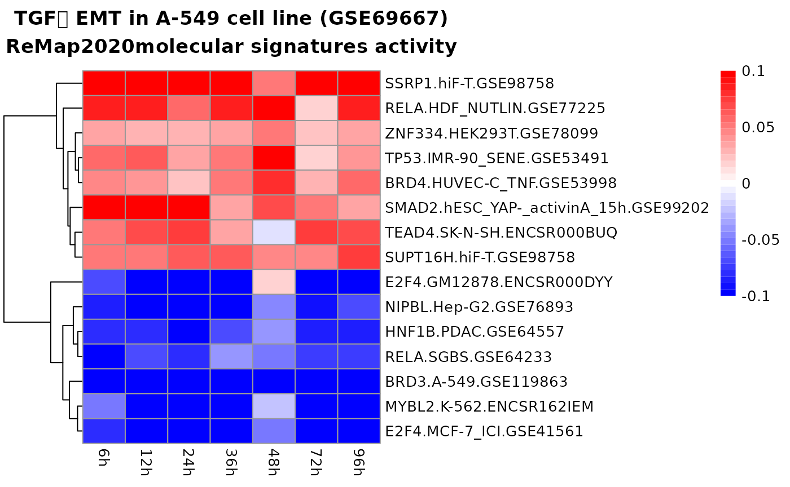
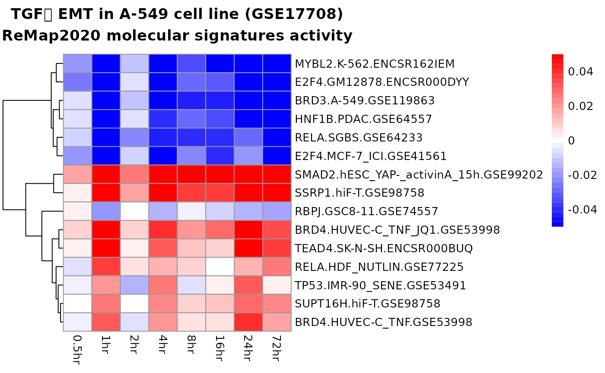

Modeling expression changes at gene level
Migdal
2/15/2022
gene_level_analysis.RmdVERSION NOTICE
This vignette uses xcore version 1.2.0, which is still in devel branch of Biocondutor and to be realeased in mid-Octorber. To use it please install xcore and xcoredata from the devel branch.
Introduction
This vignette extends the xcore user guide by showing how to perform gene level expression modeling using RNA-seq and microarray input data.
In xcore we model the expression as a function of promoter’s sequence described by the ChIP-seq signatures. Similarly to differential expression analysis, one can consider the expression at the level of genes or transcripts. While most of the analysis steps would be identical for the two variants, the key difference is in the choice of promoters annotation. Particularly, different gene’s transcripts can have distinct promoters. One the other hand, expression at gene level is an aggregation of transcripts expression yet we would rather like to use only one promoter to describe a single gene.
xcoredata provides ChIP-seq based molecular signatures
constructed against FANTOM5 promoters. These promoters correspond to
transcripts’ promoters making them very easy to use with CAGE data
mapped to FANTOM5 reference (as exemplified in xcore
user guide). Additionally, xcoredata provides a set of core
FANTOM5 promoters (promoters_f5_core) which defines only
one promoter per gene. Using this core set of promoters it is possible
to construct a gene level analysis with non-CAGE data, by matching input
gene identifiers with core FANTOM5 promoters.
The reminder of this document shows how to construct a gene level xcore analysis. For this purpose we use publicly available RNA-seq time-series dataset obtained from classic TGFꞵ induced epithelial-to-mesenchymal transition experiment conducted in A-549 cell line (Chang H, et al. NAR. 2016., GSE69667). The other example uses microarray time-series dataset also from TGFꞵ induced epithelial-to-mesenchymal transition experiment conducted in A-549 cell line (Sartor MA, et al. Bioinformatics. 2010., GSE17708).
RNA-seq data
Obtaining the expression data
We have downloaded the raw counts and metadata for GSE69667 study from GREIN portal that provide raw counts for many RNA-seq datasets deposited in the GEO repository. Before these can be used in xcore framework, downloaded metadata needs to be combined with raw counts.
If you are interested in the processing details, look up the Rmd source file of this vignette.
Here we recommend that ready to use counts matrix can be downloaded from our server.
download.file(url = "https://zdglab.iimcb.gov.pl/mmigdal/GSE69667.rda",
destfile = "GSE69667.rda")
load("GSE69667.rda")Constructing experiment design
The code below shows how to construct design matrix, by taking advantage of the patterns present in the sample names.
| 0h_rep1 | 0h_rep2 | 6h_rep1 | 6h_rep2 | 12h_rep1 | 12h_rep2 | 24h_rep1 | 24h_rep2 | 36h_rep1 | 36h_rep2 | 48h_rep1 | 48h_rep2 | 72h_rep1 | 72h_rep2 | 96h_rep1 | 96h_rep2 | |
|---|---|---|---|---|---|---|---|---|---|---|---|---|---|---|---|---|
| TSPAN6 | 1433 | 1237 | 1884 | 1749 | 885 | 1623 | 1146 | 1582 | 1453 | 1866 | 2253 | 2126 | 1537 | 1990 | 1528 | 2487 |
| TNMD | 1 | 1 | 0 | 1 | 1 | 2 | 2 | 1 | 1 | 3 | 2 | 9 | 4 | 4 | 6 | 1 |
| DPM1 | 1066 | 881 | 1738 | 1450 | 706 | 1214 | 918 | 912 | 901 | 931 | 1343 | 931 | 870 | 890 | 926 | 966 |
| SCYL3 | 531 | 597 | 412 | 506 | 425 | 491 | 432 | 458 | 459 | 483 | 488 | 552 | 451 | 563 | 548 | 489 |
| C1orf112 | 741 | 752 | 736 | 937 | 589 | 768 | 645 | 509 | 548 | 586 | 425 | 563 | 335 | 578 | 522 | 510 |
| FGR | 1 | 0 | 0 | 0 | 0 | 0 | 0 | 0 | 1 | 0 | 0 | 0 | 0 | 0 | 0 | 1 |
cond <- sub(pattern = "_.*", replacement = "", x = colnames(counts_rna_seq))
ncond <- cond %>% unique() %>% length()
design <- diag(ncond)[rep(seq_len(ncond), times = table(cond)[unique(cond)]), ]
rownames(design) <- colnames(counts_rna_seq)
colnames(design) <- unique(cond)
knitr::kable(design)| 0h | 6h | 12h | 24h | 36h | 48h | 72h | 96h | |
|---|---|---|---|---|---|---|---|---|
| 0h_rep1 | 1 | 0 | 0 | 0 | 0 | 0 | 0 | 0 |
| 0h_rep2 | 1 | 0 | 0 | 0 | 0 | 0 | 0 | 0 |
| 6h_rep1 | 0 | 1 | 0 | 0 | 0 | 0 | 0 | 0 |
| 6h_rep2 | 0 | 1 | 0 | 0 | 0 | 0 | 0 | 0 |
| 12h_rep1 | 0 | 0 | 1 | 0 | 0 | 0 | 0 | 0 |
| 12h_rep2 | 0 | 0 | 1 | 0 | 0 | 0 | 0 | 0 |
| 24h_rep1 | 0 | 0 | 0 | 1 | 0 | 0 | 0 | 0 |
| 24h_rep2 | 0 | 0 | 0 | 1 | 0 | 0 | 0 | 0 |
| 36h_rep1 | 0 | 0 | 0 | 0 | 1 | 0 | 0 | 0 |
| 36h_rep2 | 0 | 0 | 0 | 0 | 1 | 0 | 0 | 0 |
| 48h_rep1 | 0 | 0 | 0 | 0 | 0 | 1 | 0 | 0 |
| 48h_rep2 | 0 | 0 | 0 | 0 | 0 | 1 | 0 | 0 |
| 72h_rep1 | 0 | 0 | 0 | 0 | 0 | 0 | 1 | 0 |
| 72h_rep2 | 0 | 0 | 0 | 0 | 0 | 0 | 1 | 0 |
| 96h_rep1 | 0 | 0 | 0 | 0 | 0 | 0 | 0 | 1 |
| 96h_rep2 | 0 | 0 | 0 | 0 | 0 | 0 | 0 | 1 |
Obtaining core promoters annotation and molecular signatures
promoters_f5_core <- xcoredata::promoters_f5_core()
remap_promoters_f5 <- xcoredata::remap_promoters_f5()Translating gene symbols into FANTOM5 core promoters
This is the key step in gene level analysis. First we obtain a
character vector mapping gene symbols to FANTOM5 core promoters. Then we
can use it to translate our counts matrix using
translateCounts function.
eh <- ExperimentHub::ExperimentHub()## snapshotDate(): 2022-08-23
symbol2fantom <- eh[["EH7700"]]## see ?xcoredata and browseVignettes('xcoredata') for documentation## loading from cache
counts_rna_seq_fantom <- translateCounts(counts_rna_seq, dict = symbol2fantom)Processing the counts and molecular signatures
mae_rna_seq <- prepareCountsForRegression(
counts = counts_rna_seq_fantom,
design = design,
base_lvl = "0h"
)
mae_rna_seq <- addSignatures(mae_rna_seq, remap = remap_promoters_f5)
mae_rna_seq <- filterSignatures(mae_rna_seq, min = 0.05, max = 0.95)Modeling gene expression
As always, depending on infrastructure you are using this step can be time consuming.
# register parallel backend
doMC::registerDoMC(cores = 5L)
# set seed
set.seed(314159265)
res_rna_seq <- modelGeneExpression(
mae = mae_rna_seq,
xnames = "remap",
nfolds = 5)Exploring results
top_signatures <- head(res_rna_seq$results$remap, 15)
pheatmap::pheatmap(
mat = top_signatures[, 2:8],
labels_row = top_signatures$name,
cluster_cols = FALSE,
color = colorRampPalette(c("blue", "white", "red"))(35),
breaks = seq(from = -0.1, to = 0.1, length.out = 36),
main = "TGFꞵ EMT in A-549 cell line (GSE69667)\nReMap2020molecular signatures activity"
)
Microarray data
Obtaining the expression data
Here, we have downloaded supplementary data file containing pre-processed data from GSE17708 study. This supplementary file is an xls file that needs to be loaded to R and converted into matrix before we can use it.
Ready to use “counts” matrix (these are not raw counts) can be downloaded from our server.
download.file(url = "https://zdglab.iimcb.gov.pl/mmigdal/GSE17708.rda",
destfile = "GSE17708.rda")
load("GSE17708.rda")| 0hr_1 | 0hr_2 | 0hr_3 | 0.5hr_1 | 0.5hr_2 | 0.5hr_3 | 1hr_1 | 1hr_2 | 1hr_3 | 2hr_1 | 2hr_2 | 4hr_1 | 4hr_2 | 4hr_3 | 8hr_1 | 8hr_2 | 8hr_3 | 16hr_1 | 16hr_2 | 16hr_3 | 24hr_1 | 24hr_2 | 24hr_3 | 72hr_1 | 72hr_2 | 72hr_3 | |
|---|---|---|---|---|---|---|---|---|---|---|---|---|---|---|---|---|---|---|---|---|---|---|---|---|---|---|
| 780 | 14 | 14 | 14 | 14 | 14 | 15 | 14 | 14 | 15 | 15 | 14 | 15 | 15 | 15 | 16 | 15 | 16 | 16 | 16 | 16 | 15 | 15 | 16 | 15 | 15 | 15 |
| 5982 | 7 | 6 | 6 | 6 | 6 | 6 | 6 | 6 | 6 | 6 | 6 | 6 | 6 | 6 | 6 | 6 | 6 | 6 | 6 | 6 | 6 | 6 | 6 | 6 | 6 | 6 |
| 3310 | 5 | 5 | 4 | 4 | 4 | 4 | 4 | 4 | 4 | 5 | 5 | 4 | 4 | 4 | 4 | 4 | 4 | 5 | 4 | 4 | 5 | 5 | 4 | 5 | 5 | 5 |
| 7849 | 20 | 19 | 20 | 20 | 20 | 20 | 19 | 19 | 19 | 20 | 19 | 19 | 20 | 19 | 19 | 19 | 19 | 19 | 19 | 19 | 19 | 19 | 20 | 19 | 19 | 19 |
| 2978 | 7 | 7 | 7 | 7 | 7 | 7 | 7 | 7 | 7 | 7 | 7 | 7 | 7 | 7 | 7 | 7 | 7 | 7 | 7 | 7 | 7 | 7 | 7 | 7 | 7 | 7 |
| 7318 | 5 | 5 | 5 | 5 | 5 | 5 | 5 | 5 | 5 | 5 | 5 | 5 | 5 | 5 | 5 | 5 | 5 | 5 | 5 | 5 | 5 | 5 | 5 | 5 | 5 | 5 |
Constructing experiment design
Again we construct design matrix, by taking advantage of the patterns present in the sample names.
cond <- sub(pattern = "_.*", replacement = "", x = colnames(counts_microarray))
ncond <- cond %>% unique() %>% length()
design <- diag(ncond)[rep(seq_len(ncond), times = table(cond)[unique(cond)]), ]
rownames(design) <- colnames(counts_microarray)
colnames(design) <- unique(cond)
knitr::kable(design)| 0hr | 0.5hr | 1hr | 2hr | 4hr | 8hr | 16hr | 24hr | 72hr | |
|---|---|---|---|---|---|---|---|---|---|
| 0hr_1 | 1 | 0 | 0 | 0 | 0 | 0 | 0 | 0 | 0 |
| 0hr_2 | 1 | 0 | 0 | 0 | 0 | 0 | 0 | 0 | 0 |
| 0hr_3 | 1 | 0 | 0 | 0 | 0 | 0 | 0 | 0 | 0 |
| 0.5hr_1 | 0 | 1 | 0 | 0 | 0 | 0 | 0 | 0 | 0 |
| 0.5hr_2 | 0 | 1 | 0 | 0 | 0 | 0 | 0 | 0 | 0 |
| 0.5hr_3 | 0 | 1 | 0 | 0 | 0 | 0 | 0 | 0 | 0 |
| 1hr_1 | 0 | 0 | 1 | 0 | 0 | 0 | 0 | 0 | 0 |
| 1hr_2 | 0 | 0 | 1 | 0 | 0 | 0 | 0 | 0 | 0 |
| 1hr_3 | 0 | 0 | 1 | 0 | 0 | 0 | 0 | 0 | 0 |
| 2hr_1 | 0 | 0 | 0 | 1 | 0 | 0 | 0 | 0 | 0 |
| 2hr_2 | 0 | 0 | 0 | 1 | 0 | 0 | 0 | 0 | 0 |
| 4hr_1 | 0 | 0 | 0 | 0 | 1 | 0 | 0 | 0 | 0 |
| 4hr_2 | 0 | 0 | 0 | 0 | 1 | 0 | 0 | 0 | 0 |
| 4hr_3 | 0 | 0 | 0 | 0 | 1 | 0 | 0 | 0 | 0 |
| 8hr_1 | 0 | 0 | 0 | 0 | 0 | 1 | 0 | 0 | 0 |
| 8hr_2 | 0 | 0 | 0 | 0 | 0 | 1 | 0 | 0 | 0 |
| 8hr_3 | 0 | 0 | 0 | 0 | 0 | 1 | 0 | 0 | 0 |
| 16hr_1 | 0 | 0 | 0 | 0 | 0 | 0 | 1 | 0 | 0 |
| 16hr_2 | 0 | 0 | 0 | 0 | 0 | 0 | 1 | 0 | 0 |
| 16hr_3 | 0 | 0 | 0 | 0 | 0 | 0 | 1 | 0 | 0 |
| 24hr_1 | 0 | 0 | 0 | 0 | 0 | 0 | 0 | 1 | 0 |
| 24hr_2 | 0 | 0 | 0 | 0 | 0 | 0 | 0 | 1 | 0 |
| 24hr_3 | 0 | 0 | 0 | 0 | 0 | 0 | 0 | 1 | 0 |
| 72hr_1 | 0 | 0 | 0 | 0 | 0 | 0 | 0 | 0 | 1 |
| 72hr_2 | 0 | 0 | 0 | 0 | 0 | 0 | 0 | 0 | 1 |
| 72hr_3 | 0 | 0 | 0 | 0 | 0 | 0 | 0 | 0 | 1 |
Translating gene symbols into FANTOM5 core promoters
Next, we need to translate expression matrix’s row IDs to FANTOM5 core promoters. The only difference is that this time we map ENTREZ IDs to FANTOM5 promoters.
eh <- ExperimentHub::ExperimentHub()## snapshotDate(): 2022-08-23
entrez2fantom <- eh[["EH7699"]]## see ?xcoredata and browseVignettes('xcoredata') for documentation## loading from cache
counts_fantom <- translateCounts(counts_microarray, dict = entrez2fantom)Processing the counts and molecular signatures
Here, our workflow deviates from the previous example. Because, we use the pre-processed expression data we don’t really want to normalize it. Instead we will use the data as is.
mae_microarray <- regressionData(
expr_mat = counts_fantom,
design = design,
base_lvl = "0hr"
)
mae_microarray <- addSignatures(mae_microarray, remap = remap_promoters_f5)
mae_microarray <- filterSignatures(mae_microarray, min = 0.05, max = 0.95)Modeling gene expression
# register parallel backend
doMC::registerDoMC(cores = 5L)
# set seed
set.seed(314159265)
res_microarray <- modelGeneExpression(
mae = mae_microarray,
xnames = "remap",
nfolds = 5)Exploring results
top_signatures <- head(res_microarray$results$remap, 15)
pheatmap::pheatmap(
mat = top_signatures[, 2:9],
labels_row = top_signatures$name,
cluster_cols = FALSE,
color = colorRampPalette(c("blue", "white", "red"))(35),
breaks = seq(from = -0.05, to = 0.05, length.out = 36),
main = "TGFꞵ EMT in A-549 cell line (GSE17708)\nReMap2020 molecular signatures activity"
)